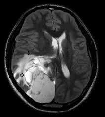
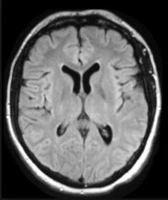
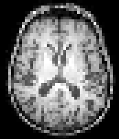

تحديد أهداف المشروع وحدود المشكلة، مع التركيز على أهمية التمييز بين الأورام الحميدة والخبيثة باستخدام الشبكات العصبية التلافيفية.
هدفنا الرئيسي هو تصنيف الأورام إلى فئات حميدة وخبيثة، وهذه العملية ضرورية للتخطيط المناسب للعلاج.
المستخدمون المحتملون للنموذج: المتخصصون الطبيون، المستشفيات، المؤسسات البحثية، تطبيقات الطب عن بعد، المؤسسات التعليمية.
بعد تحديد نطاق المشروع، ننتقل إلى جمع البيانات.
جمع البيانات 🖼️
في مرحلة جمع البيانات من مشروعنا، نركز على تجميع البيانات اللازمة لتدريب واختبار الشبكة العصبية التلافيفية (CNN) لتصنيف أورام الدماغ. تعتبر هذه المرحلة حاسمة لأن جودة وكمية البيانات تؤثر بشكل مباشر على أداء نموذجنا.
مصدر البيانات: سنستخدم مجموعة بيانات تتضمن صورًا لفحوصات الدماغ تظهر أورامًا حميدة وخبيثة.
تتكون مجموعة البيانات من صور الرنين المغناطيسي (MRI) المصنفة إلى فئتين:
NO - يشير إلى عدم وجود ورم، ومشفّر كـ 0.
YES - يشير إلى وجود ورم، ومشفّر كـ 1.
أنواع الصور 🔎
Malignant - صورة ورم خبيث

Benign - صورة ورم حميد

📝 هل يمكنك تحديد ما إذا كانت الصورة التالية تُظهر ورمًا خبيثًا أو حميدًا؟
اختر التصنيف:
{{ option }}
{{ quizFeedback }}
تصور البيانات 📊
مقدمة في تصور البيانات
تصور البيانات هو أداة قوية في أي مشروع يركز على البيانات، خاصة في مجالات مثل التصوير الطبي. في هذه المرحلة، نهدف إلى تمثيل البيانات من مجموعة بيانات أورام الدماغ بصريًا لاكتساب رؤى وفهم أفضل للأنماط الموجودة فيها.
الغرض:
يساعد التصور في تحديد الاتجاهات، والنقاط الشاذة، وتوزيع البيانات. يجعل البيانات المعقدة أكثر سهولة في الوصول إليها وتفسيرها، مما يساعد في كل من تطوير وتقييم نموذجنا.
أنواع التصورات:
لمشروعنا، سنركز على نوعين رئيسيين من التصورات:
Count of Class in Each Set - سيظهر هذا توزيع الحالات (وجود ورم أو عدم وجود ورم) في مجموعة البيانات الخاصة بنا، مع تسليط الضوء على أي عدم توازن قد يؤثر على تدريب النموذج.
Interactive MRI Scan Viewer - ميزة تفاعلية تسمح للمستخدمين بتصفح أقسام مختلفة من فحص الرنين المغناطيسي (MRI).
التصور 📶
في هذا القسم، نعرض بشكل مبدئي خمس صور من كل فئة: تلك التي تشير إلى وجود أورام ("YES") وتلك التي بدون ("NO"). يساعد هذا في تقديم عرض فوري ومقارن للفئتين الرئيسيتين في مجموعة بياناتنا.
عرض الصور
عدد الصور: {{ numImages }}
توزيع الفئات في كل مجموعة
×
يوضح المخطط التوزيع الإجمالي للحالات، مع عرض التوازن بين الفئتين (نعم و لا). يعتبر فهم هذا التوزيع أمرًا مهمًا حيث يخبرنا عن تكوين مجموعة البيانات ويساعد في تحديد أي تحيزات محتملة يمكن أن تؤثر على تدريب النموذج وأدائه.
مجموعة التدريب: تُستخدم لتدريب النموذج.
مجموعة التحقق: تُستخدم لتحسين النموذج وتجنب التعميم الزائد أثناء التدريب.
مجموعة الاختبار: تُستخدم لتقييم أداء النموذج المدرب على بيانات غير مرئية.
تحليل صور أورام الدماغ 🖥
عارض تفاعلي لمسح الرنين المغناطيسي (MRI) استخدم الشريط السفلي للتنقل بين الأقسام المختلفة لمسح الرنين المغناطيسي. تتيح لك هذه الميزة التفاعلية استكشاف تنوع وتعقيد المسوحات في مجموعة البيانات الخاصة بنا.
قص البيانات 📷
يساعد القص في الشبكات العصبية التلافيفية (CNN) على التركيز على الميزات ذات الصلة عن طريق إزالة المعلومات غير ذات الصلة وتوفير زوايا متنوعة، مما يعزز قدرة الشبكة على تعلم الأنماط المميزة بكفاءة من الصور المدخلة.
قص البيانات
عرض قص الدماغ
قبل القص
بعد القص
تطبيع البيانات 🗂️
تتكون الصور من بكسلات، ولكل بكسل قيمة تتراوح من 0 إلى 255 (للصور ذات التدرج الرمادي 8 بت) أو مجموعات من ثلاث قيم تتراوح من 0 إلى 255 لكل قناة (الأحمر، الأخضر، والأزرق) للصور الملونة. يتضمن التطبيع إعادة مقياس هذه القيم إلى نطاق بين 0 و 1.
قبل التطبيع:
بعد التطبيع:

أسئلة عن ما سبق 😱
في تصنيف أورام الدماغ، ماذا يعني "حميد"؟
A. نوع من الأورام الخبيثة
B. ورم غير سرطاني
أي تقنية تصور تُستخدم عادة لتجزئة أورام الدماغ؟
A. الرسوم البيانية العمودية
B. صور الرنين المغناطيسي
C. مخططات الانتشار
لماذا يعتبر تقليم البيانات مهمًا في تحليل صور أورام الدماغ؟
A. لتحسين دقة الصورة
B. للتركيز على الخصائص ذات الصلة وإزالة المعلومات غير الضرورية
ما الهدف من تطبيع البيانات في تحليل صور أورام الدماغ؟
A. زيادة حدة الصورة
B. لتوحيد المقاييس بين نقاط البيانات المختلفة
النمذجة: مقدمة في الشبكات العصبية التلافيفية (CNN) 🗒
في مرحلة النمذجة، سنستخدم شبكة عصبية تلافيفية (CNN) لتصنيف أورام الدماغ. هذه خطوة حاسمة حيث يتعلم الكمبيوتر التمييز بين الأورام الحميدة والخبيثة من خلال مسوحات الدماغ.
ما هي الشبكة العصبية التلافيفية (CNN)؟
الشبكة العصبية التلافيفية هي نوع من الذكاء الاصطناعي الذي يتفوق في معالجة وتحليل الصور. إنها فعالة بشكل خاص في المهام التي تتطلب التعرف على الأنماط والتفاصيل داخل الصور.
مكونات الشبكة العصبية التلافيفية (CNN):
طبقات التلافيف: تقوم بمسح أجزاء صغيرة من الصورة لتحديد ميزات مثل الحواف والأشكال.
طبقات التجميع (Pooling): تقوم هذه الطبقات بتقليل حجم بيانات الصورة.
الطبقات المتصلة بالكامل: تستخدم جميع المعلومات لاتخاذ قرار حول الصورة.
تدريب وضبط نموذج الـ CNN 🏋️♂️
ℹ️
الشبكة العصبية التلافيفية (CNN) تُستخدم لتدريب النموذج.
✅ تم تدريب النموذج بنجاح! دقة التحقق: {{ validationAccuracy }}% دقة الاختبار: {{ testAccuracy }}%
×
مصفوفة الارتباك هي تمثيل مرئي لأداء النموذج التصنيفي.
توضح المصفوفة عدد التوقعات الصحيحة والخاطئة التي قام بها النموذج مقارنةً بالنتائج الفعلية.
تقييم النموذج 📋
في مرحلة التقييم، نختبر نموذج CNN الخاص بنا من خلال السماح للمستخدمين باختيار صور فحص الدماغ والتنبؤ بما إذا كانت الأورام حميدة أم خبيثة. يوفر هذا النهج التفاعلي تجربة مباشرة وعملية لقدرات النموذج.
🧬 اختبار نموذج CNN الخاص بك 🧬
📌 اختر صورة لاختبار نموذج CNN الخاص بك.
{{ predictionMessage }}
×
🎉 تهانينا! لقد أكملت مشروع تصنيف أورام الدماغ بنجاح! 🎉